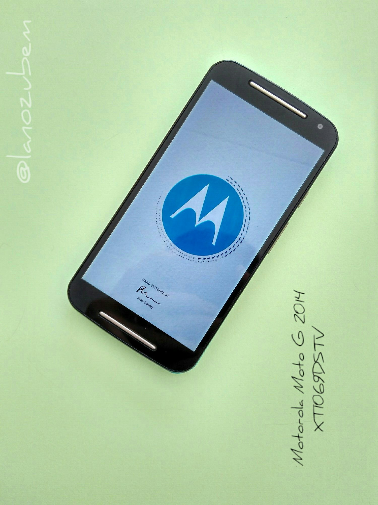
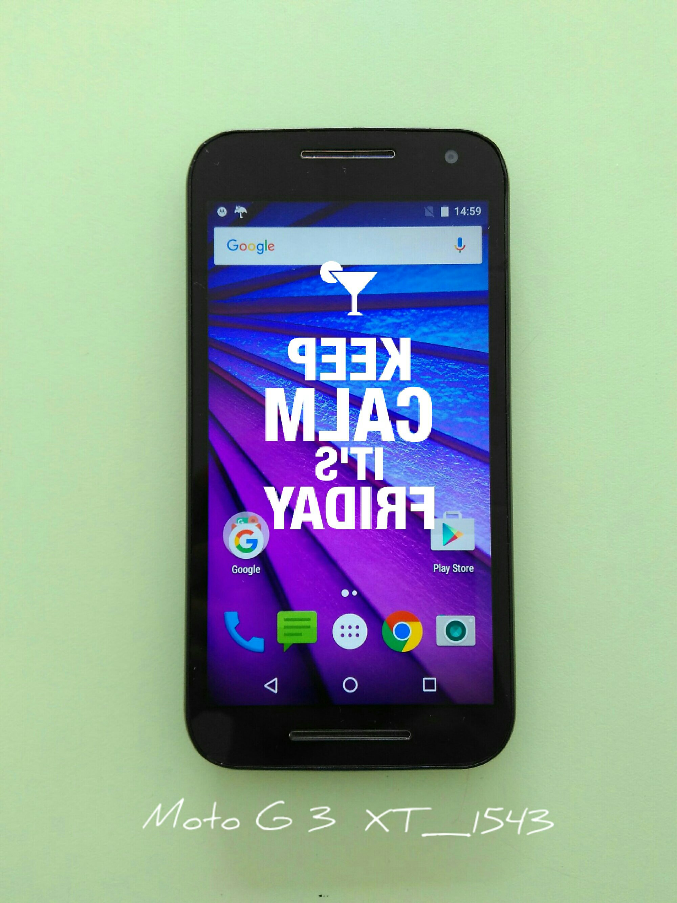
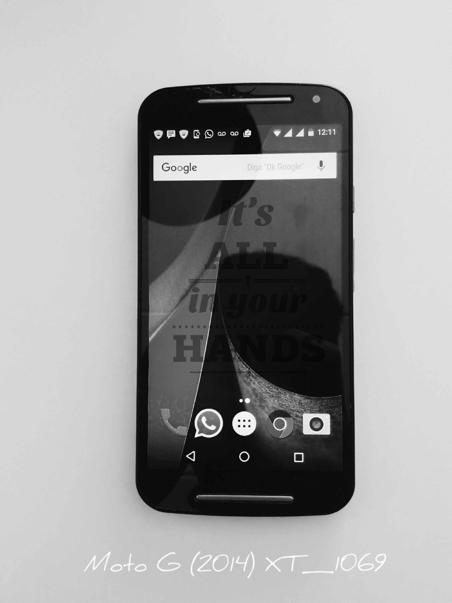
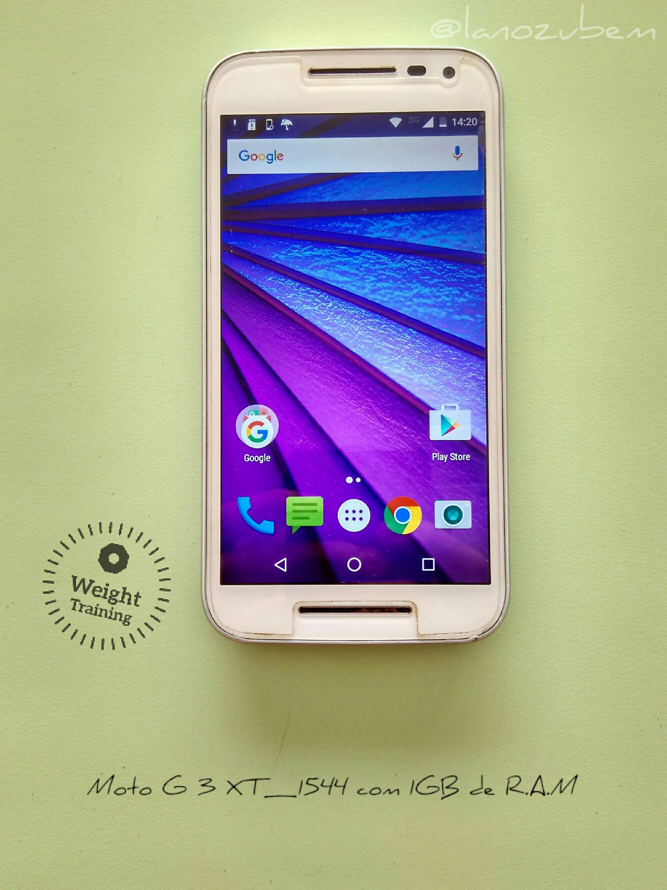
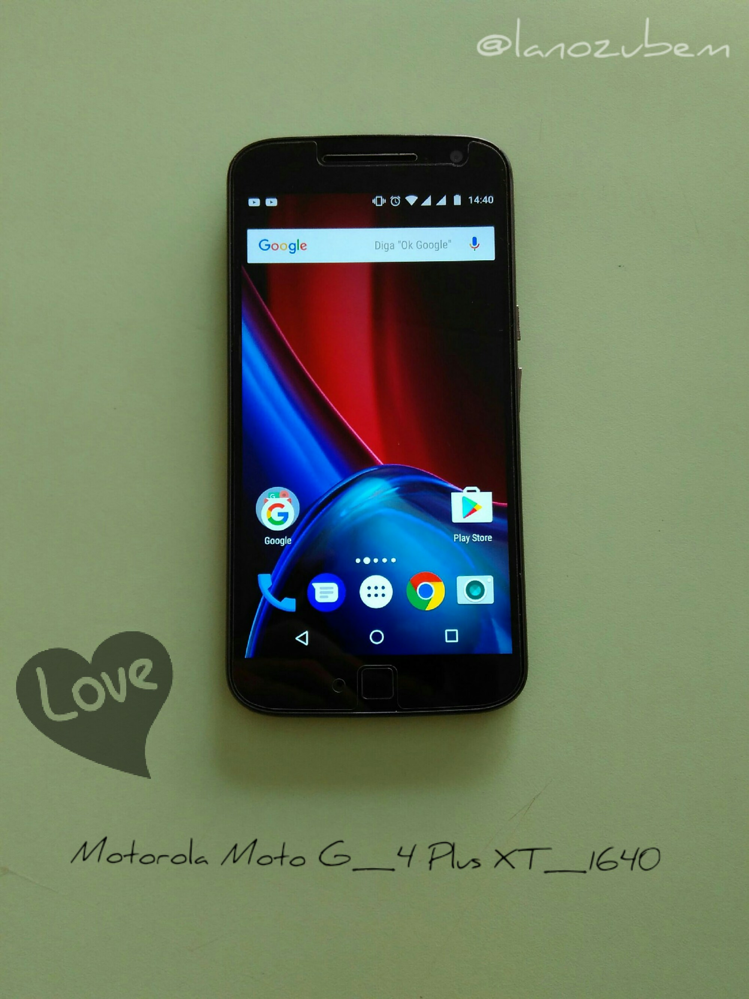
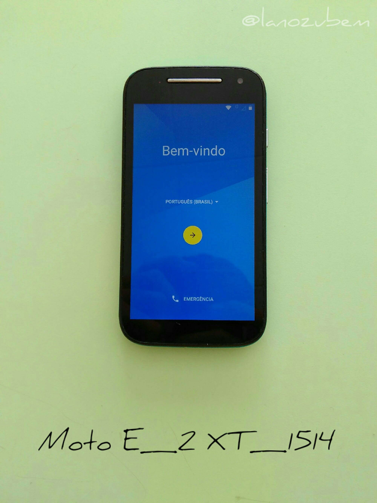
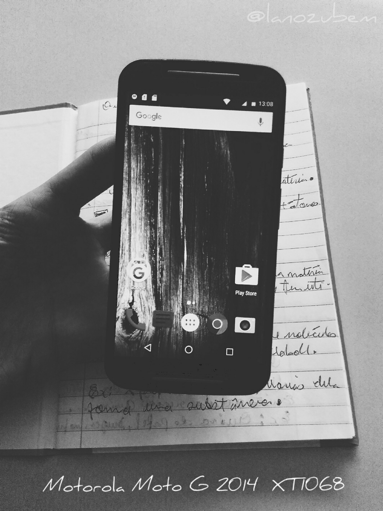
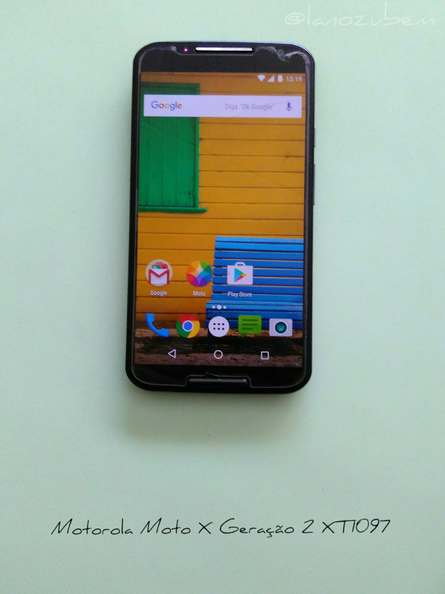
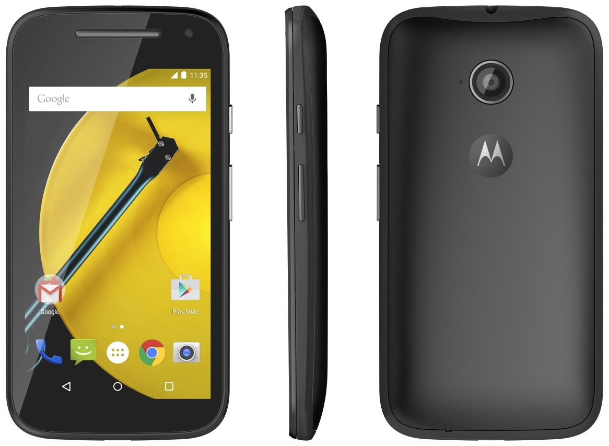

Pra que quebrar cabeça se o hard reset Motorola está aqui
- Outros |
- Hard_reset |
- Motorola
Para agilizar pressione a tecla F3 e ensira o modelo.
-
Hard Reset para o Moto G XT1033

Remoção do bloqueio de tela do Moto G -
Hard Reset Moto G XT1069 DSTV
Remoção do bloqueio de tela do MotoG DSTV -
Hard Reset para o Moto G XT1543
Remoção do bloqueio de tela do MOTO G g.3 -
Hard Reset para o MOTO E XT1021

Remoção do bloqueio de tela do Moto E -
Hard Reset para o Moto G XT1069
Remoção do bloqueio de tela do Moto G -
Hard Reset para o MOTO G XT1544
Remoção do bloqueio de tela do MotoG 3 -
Hard Reset Moto G 4 XT1640
Remoção do bloqueio de tela do Moto g 4 plus -
Hard Reset no MOTO E XT1514
Remoção do bloqueio de tela no MOTO E -
Hard Reset para o Moto G XT1068
Remoção do bloqueio de tela do MotoG 2 -
Hard Reset para o Moto G XT1032

Remoção do bloqueio de tela do MotoG -
Hard Reset para o Moto X XT1097
Remoção do bloqueio de tela do Moto X -
Hard Reset para o Moto E XT1022

Remoção do bloqueio de tela do Moto E -
Hard Reset para o Moto E XT1025 TV

Remoção do bloqueio de tela do Moto E TV -
Hard Reset para o MOTO E4 PLUS XT1773

Remoção do bloqueio de tela do MOTO E4 PLUS -
Hard Reset para o MOTO E XT1506
Remoção do bloqueio de tela do MOTO E G. 2 -
Hard Reset para o MOTO G XT1556

Remoção do bloqueio de tela do MOTO G 3 -
Hard Reset para o MOTO 4G LTE G XT1078

Remoção do bloqueio de tela do MOTO G 4G